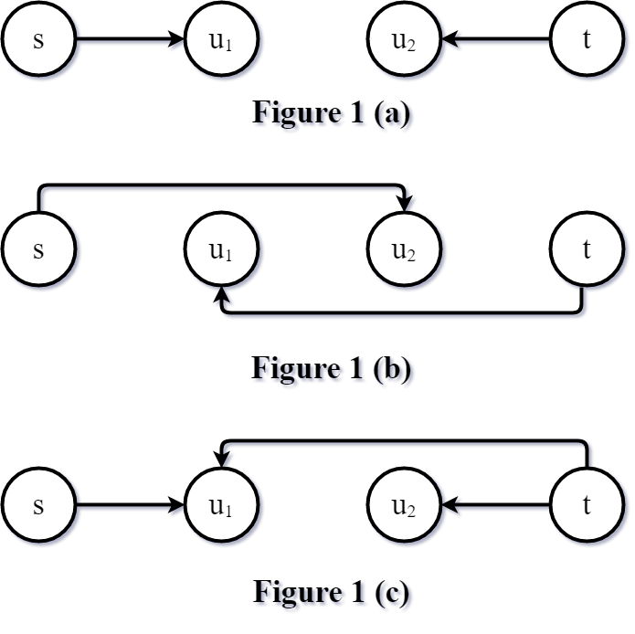
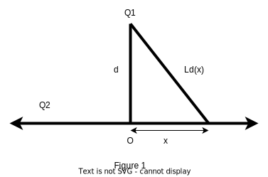
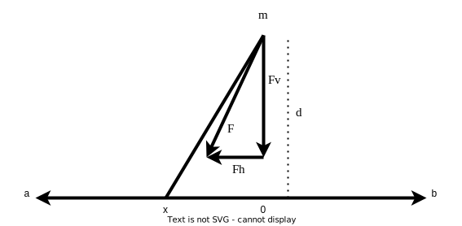
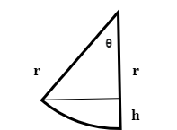
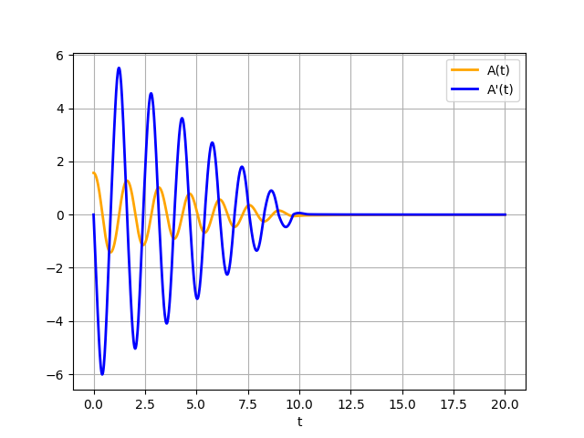

In the most cost-effective loan problem, we are given a directed
graph of actors where each actor may lend some amount of resources
it possesses to its child nodes. In case an actor needs more than
his immediate parents can lend, the parents might need to lend from
their parents, adjust the interest rate to cover their own expenses,
and pass the funds to the original lending actor.
Formally, we are given a directed graph $G = (V, A)$, where $V$
is the set of actors, and
$A \subseteq V^2 \setminus \{ (u, u) \in V^2 \text{ for all } u \in V\}$ is the set of directed
arcs, excluding self-loops. By $V(G)$ we denote the actor set of $G$, and, likewise, by
$A(G)$ we denote the arc set of $G$. Given an arc $(u, v) \in A$,
we call $u$ a parent of $v$, $v$ a child of $u$.
Existence of such an arc indicates that $u$ may lend some or all
of its resources to $v$. Along the graph, we are given a
potential function $\mathfrak{P} \colon V \to [0, \infty) = \mathbb{R}_{\geq 0}$
that maps each actor in the graph to the (non-negative) equity that that very
node has at its disposal. Finally, we are given an interest rate function
$\mathfrak{I} \colon A \to \mathbb{R}_{\geq 0}$ that maps each arc
$(u, v) \in A$ to the interest rate the actor $u$ can offer $v$
when $v$ decides to lend from $u$. From now on, we will call the
aforementioned amount of resources or equity simply potential.
Apart from the target data structure, in a problem instance, we
are given an actor $a \in V$ that applies for a loan, a required
potential $P \in \mathbb{R}_{> 0}$ and a maximum tolerable
interest rate $i \in \mathbb{R}_{\geq 0}$. Our aim, then, is to
compute a loan (which may involve more than one lending actor)
with minimized interest rates.
Throughout the post, we assume a simple interest rate model. The
accumulated balance at time $t$ since the time point at which the
loan was issued, with initial principal $\mathfrak{A}$ and interest
rate $r$ is given by
\[
\mathfrak{A}(1 + r)^t.
\]
If we have in the graph, for instance, a directed acyclic path
$\langle u, v, z \rangle$ with $r_{u,v}$ being the interest rate
of $(u, v)$, and $r_{v, z}$ being the interest rate of $(v, z)$,
the interest rate equation becomes
\[
\mathfrak{A}(1 + r_{u,v})^t (1 + r_{v,z})^t = \mathfrak{A}\big[ (1 + r_{u,v})(1 + r_{v,z}) \big]^t = \mathfrak{A}(1 + R)^t.
\]
Above, $R$ is the combined interest rate. Dividing both
sides by $\mathfrak{A}$ and taking $t$-th root, we obtain
\begin{aligned}
(1 + r_{u,v})(1 + r_{v,z}) &= 1 + R \\
R + 1 &= 1 + r_{u,v} + r_{v,z} + r_{u,v}r_{v,z} \\
R &= r_{u,v} + r_{v,z} + r_{u,v}r_{v,z}.
\end{aligned}
In general, we write $r_1 + r_2 + r_1 r_2 = \mathfrak{C}(r_1, r_2).$
Since we may deal with entire "loan chains," we need
to define the concept of effective interest rate.
Effective interest rate is given by
\[
I(u, v) = \min \Bigg(\mathfrak{I}(u, v), \underset{z \in {\rm C {\small hildren}}(G, u)}{\min} \mathfrak{C}(\mathfrak{I}(u, z), I(z, v))\Bigg)
\]
where ${\rm C{\small HILDREN}}(G, u)$ is the set of child nodes
of $u$, or, formally, $\{ v \colon (u, v) \in A(G) \}.$
Also, for the above formula to be sensible, we need to set $\mathfrak{I}(u, v) = \infty$ for all missing arcs $(u, v) \not\in A(G)$, and $I(u, u) = 0$ for all $u \in V(G)$.
Given a problem instance $(G, a, \mathfrak{P}, \mathfrak{I}, P, i)$,
we wish to compute two additional functions: $\pi$ and $d$.
$\pi \colon V \to \mathbb{R}_{\geq 0}$ is called a
solution potential function and it maps each actor
$u$ to potential $\pi(u)$ $u$ can lend, and $d \colon V \to V$
is called a direction function and it maps each actor
$u$ to some of its children $d(u)$ to which $\pi(u)$ worth
potential is being lent. What comes to constraints, no actor
$u$ lending some of its potential shall have $I(u, a) > i$,
since $a$ cannot afford effective interest rates above $i$.
Also, if it is not possible, due to the first constraint, to
obtain a loan worth $P$, the loan should be maximized from below
as close to $P$ as possible.
In order to implement the first constraint, we need to define the
set of admissible solution potential functions:
\[
\pi_{I, a, i, G} = \{ \pi \colon V(G) \to \mathbb{R}_{\geq 0} \; | \; \pi(u) = 0 \text{ if } I(u, a) > i \}.
\]
An admissible solution potential function $\pi$ is said to be valid
if it also satisfies
\[
\sum_{u \in V} \pi(u) \in [0, P],
\]
and we denote that by $\pi \in \mathfrak{V}$.
Now, we can state the objective formally:
\[
\pi = \underset{\pi' \in \mathfrak{V}}{\arg \min}{\Bigg[ P - \sum_{u \in V} \pi'(u) \Bigg]},
\]
and
\[
d(u) = \underset{z \in {\rm C {\small HILDREN}}(G, u)}{\arg \min} \Bigg[\mathfrak{C}\big(\mathfrak{I}(u, z), I(z, a)\big)\Bigg].
\]
Since the effective interest rate does not decrease with adding
more directed arcs, we must have that for any actor $a \in V$ the
most cost-efficient lender is an immediate parent. Whether the second most cost-efficient lender
is an immediate parent or not depends on effective interest rates.
Regardless, since we consider effective interest rates, basically we
are growing a directed "minimum spanning tree" which we
extend in a greedy fashion one arc at a time:
In the very beginning, the tree is trivial and consists only of $a$.
Then a most cost-effective parent $u_1$ is selected and the arc $(u_1, a)$
is introduced to the tree. Then $u_2$ is selected. It must not
belong to $\{a, u_1\}$ while have the lowest possible effective interest rate
among all nodes in $V \setminus \{ a, u_1 \}$. This procedure continues
until a desired potential $P$ is collected or until there is no more nodes
left with affordable effective interest rates. Below
Priority-Queue-Insert$(Q, \langle a, b, c \rangle)$
stores the triple $\langle a, b, c \rangle$ in the priority queue $Q$ and uses $c$ as a priority key.
$\text{let } Q \text{ be an empty priority queue}$$\text{let } \pi \text{ be an empty solution potential function}$$\text{let } d \text{ be an empty direction function}$$\text{let } C \leftarrow \{a\}$$\text{let } P_{\text{collected}} \leftarrow 0 \text{ be the funds currently collected}$$\pi(u) \leftarrow 0$$d(u) \leftarrow \Nil$Priority-Queue-Insert$(Q, \langle u, a, \mathfrak{I}(u, a) \rangle)$$\langle u, v, i_{\text{current}} \rangle \leftarrow $ Priority-Queue-Extract-Minimum$(Q)$$P_\Delta \leftarrow \min (P - P_{\text{collected}}, \mathfrak{P}(u))$$P_{\text{collected}} \leftarrow P_{\text{collected}} + P_\Delta$$\pi(u) \leftarrow P_\Delta$$d(u) \leftarrow v$$C \leftarrow C \cup \{ u \}$$i_{\text{next}} \leftarrow \mathfrak{C} \big( i_{\text{current}}, \mathfrak{I}(z, u) \big)$Priority-Queue-Insert$(Q, \langle z, u, i_{\text{next}}\rangle)$$(\pi, d)$
Lemma 1 (Termination)The algorithm terminates.
Note that each node removed from the priority queue at line 13 is
inserted into the closed set $C$ at line 18. Now, the line 23 will not
reintroduce the same node to $Q$ and so, $Q$ eventually becomes empty (unless
the algorithm terminates earlier in case the required potential is collected).
Lemma 2 (Optimality)The algorithm finds most cost-effective loans.
The effective interest rate function $I$ implicitly defines a transitive closure
from any actor $u \neq a$ to $a$ assuming the effective interest rate of $u$ is
within the constraint $I(u, a) \leq i$. That way, $a$ loans from all affordable
parents (immediate or intermediate) in a greedy fashion: lend as much as possible
from the most affordable actor, then lend as much as possible from the second most
affordable actor, and so on until the requested potential is collected or there are
no more affordable lenders left. It is easy to see that such strategy minimizes
interest expenses.
Lemma 3 ($d$ is acyclic)Given a solution direction function $d$,
there exist no actor sequence $\langle u_1, u_2, \dots, u_k \rangle$
such that $d(u_1) = u_2$, $d(u_2) = u_3$, $\dots$, $d(u_{k - 1}) = u_k$ and $d(u_k) = u_1$.
The only way for such a cycle to emerge is to have $\mathfrak{I}(u_1, u_2) =
\mathfrak{I}(u_2, u_3) = \dots = \mathfrak{I}(u_{k-1}, u_k) = \mathfrak{I}(u_k, u_1) = 0$, and to pass in $\infty$ as the required potential. Since it is reasonable
not to accept infinity for the requested potential, and we have the closed list around in the algorithm, this phenomenon cannot appear.
Without loss of generality, suppose the search enters the cycle via $u_1$. When $u_k$ will be
removed from the priority queue, the arc $(u_k, u_1)$ will be ignored by the line 20 since $u_1$ is in $C$, and
so, there is no way $d(u_k)$ could be mapped to $u_1$.
Lemma 4The sum of all solution potentials cannot exceed $P$.
This is trivially guaranteed by the line 14 and the second test at line 12.
All the operations except Priority-Queue-Insert
and Priority-Queue-Extract-Minimum run in $\mathcal{O}(1)$ time.
In particular, operations on $\pi, d$ and $C$ may be expected to run in $\mathcal{O}(1)$
on average by resorting to hash-table based maps and sets. With geometric expansion
scheme [1], adding an element to a hash-table based data
structure runs in amortized $\mathcal{O}(1)$. (If the load factor reaches its
upper bound, the underlying storage array must be made larger.)
What comes to the priority queue $Q$, it clearly stores graph actors without copies
of a same actor. Now, if we choose a binary heap, both run in $\mathcal{O}(\log V)$ time.
Priority-Queue-Insert is called no more than $|E|$
times, and Priority-Queue-Extract-Minimum is called once per
node, and so we have the running time $\mathcal{O}(E \log V + V \log V) = \mathcal{O}(E \log V)$. By deploying
a Fibonacci heap instead, we may reduce this to $\mathcal{O}(E + V \log V)$.
We used a very simple interest rate model in our solution, and
so it leaves the case where the used interest rate model is more
realistic. In general, with initial principal $\mathfrak{A}$,
interest rate $r > 0$, the number of compound periods $n$ per time unit, and time
since the moment the loan was issued $t$, the balance grows
according to
\[
\mathfrak{C} = \mathfrak{A}\Bigg( 1 + \frac{r}{n} \Bigg)^{\lfloor nt \rfloor}.
\]
Also, as $n \to \infty$, $\mathfrak{C} \to \mathfrak{A}e^{rt}$.
Combining loans with different parameters in a meaningful way
seems to be a non-trivial task but we might address it later.
In this post, I will briefly discuss a rather simple graph search technique [1] that turned out to be rather efficient on sparse, directed, unweighted graphs.
Before that, I will review some terminology.
A directed, unweighted graph $G$ is an ordered pair $(V, A)$, where $V$ is the set of nodes, and $A \subseteq V \times V$ is the set of directed arcs.
Given two terminal nodes $s, t \in V$, we wish to find a shortest $s,t$-path, or, in other words,
a path that connects the node $s$ to the node $t$ using minimum number of arcs.
According to common jargon, $s$ is called a source node, and $t$ is called a target node.
Also, by $A(G)$ we will denote the arc set of $G$.
Also, if we are given an arc $a = (u, v)$, we call $u$ a parent of $v$, $v$ a child of $u$.
Finally, we reserve the term " search frontier" to depict the set of nodes no further from the main node than
$\Delta \in \mathbb{N} \cup \{ 0 \}$ steps.
What comes to the actual algorithm in question, it utilizes iterative deepening in order to reduce memory consumption.
It first checks that the invocation is trivial (the source node is the target node),
and if so, returns $\langle s \rangle = \langle t \rangle$.
Now, let $F_f^k$ be the set of nodes in $G$ that are reachable from $s$ in $k$ hops following the directions of the arcs.
Let also $F_b^k$ be the set of nodes in $G$ that are reachable from $t$ in $k$ hops following the opposite directions of the arcs.
Formally, the algorithm computes $F_f^k$ and $F_b^k$ for $k = 0, 1, \dots$ until $F_f^k$ intersects $F_b^k$ for some $k$ and returns a "meeting node" $\mu$ for which $\mu \in F_f^k \cap F_b^k$.
After finding such a meeting node, the shortest path is reconstructed by recursively finding the shortest $s,
\mu$-path and appending the node stack of the backward search process.
Otherwise, if the meeting node is not found, $k$ is incremented, and the search repeats once again.
There is, however, a catch. Suppose a simple graph $V = \{s, u_1, u_2, t\}, A = \{ (s, u_1), (u_1, u_2), (u_2, t) \}$ is searched for a shortest $s,t$-path.
Now, the search procedure currently under discussion will return with no path,
and that happens because the forward and backward search frontiers, F_f^k and F_b^k, respectively,
go "through" each other:
For $k = 1$, $F_f^k = \{ u_1 \}$ and $F_b^k = \{ u_2 \}$, and if $k = 2$, $F_f^k = \{ u_2 \}$ and $F_b^k = \{ u_1 \}$,
and so, the search frontiers are not able to
agree on a meeting node. In order to remedy this, for each turn of the backward search,
it is run twice:
once for detecting shortest paths with the even number of arcs, and once for detecting shortest paths with the odd number of arcs.
Or, in another words, for each $k$ in forward direction, two backward searches are conducted: $F_b^k$ and $F_b^{k + 1}$.
Last but not least, if there is no $s,t$-path, the algorith will stuck.
As it became evident, BIDDFS is also bidirectional, so we need to to discuss shortly the benefits of such an arrangement.
Suppose that the average out-degree is $d$ and the shortest path consists of $N$ arcs. Now the total work done by unidirectional breadth-first search
is roughly
\[
W_1 = \sum_{i=0}^N d_i = \Theta(d^N),
\]
where $N$ is the number of arcs on the shortest path, and $d$ is the average out-degree. Of course,
the above expression requires little variance in nodes' out-degrees.
If, however, we denote the average out-degree by $d_o$ and average in-degree by $d_i$,
the work done by bidirectional breadth-first search is
\[
W_2 = \sum_{j=0}^{N/2} d_i^j + \sum_{j=0}^{N/2} d_o^j.
\]
Now, if we set $d_i = d_o = d$, the speedup is roughly
\begin{aligned}
\frac{W_1}{W_2} = \frac{\sum_{j = 0}^N d^j}{2 \sum_{j = 0}^{N / 2} d^j}
= \frac{\frac{1 - d^{N + 1}}{1 - d}}{2 \frac{1 - d^{N / 2 + 1}}{1 - d}}
= \frac{1 - d^{N + 1}}{2 (1 - d^{N / 2 + 1})}
=\frac{d^{N + 1} - 1}{2(d^{N / 2 + 1} - 1)}
\approx \frac{d^{N + 1}}{2d^{N / 2 + 1}}
= \frac{d^{N / 2}}{2}
= \Theta(d^{N/2}),
\end{aligned}
which implies exponential speedup in shortest path length.

The figures 1 (A) and 1 (B) demonstrate how the two search spaces go "through" each other, and the figure 1 (C) shows how to address that issue.
Before we proceed to pseudocode, we have to review some notational conventions.
Given a graph $G$, the set of all children of a node $u \in V(G)$ is written as
${\rm C{\small HILDREN}}(G, u)$. Also, the set of all parents of a node
$u$ is written as ${\rm P{\small ARENTS}}(G, u)$. The algorithm 1 reconstructs the
shortest path by recursively searching the shortest $s,\mu$-path from the source node
and to the meeting node $\mu$, appends the $B$-path to the resulting path and returning the
concatenation. The algorithm 2 is the forward search routine that colors all the nodes
exactly $\Delta$ hops away from the source. Note that it may color the nodes
less than $\Delta$ hops away, since it may "make a turn" and proceed towards
closer nodes. It is, however, sufficient for us that the routine does not reach the nodes
farther than $\Delta$ steps away. The algorithm 3, like the algorithm 2, makes a
depth-first search backwards, but along opposite direction (from child to parent). When
the node $\mu$ for which $\mu \in F_b^k$, the search is over and the shortest path
is reconstructed via algorithm 1. Finally, the algorithm 4 performs the actual search
by increasingly going deeper in the graph until the two search frontiers $F_f^k, F_b^k$ (or $F_f^k, F_b^{k+1}$) intersect.
$\pi \leftarrow$ Find-Shortest-Path$(G, s, \mu)$$\text{remove the last node from } \pi$$\pi \circ B$
$F \leftarrow F \cup \{ u \}$Depth-Limited-Search-Forward$(G, v, \Delta - 1, F)$
$\text{prepend } u \text{ to } B$$u$$\text{remove the head node in }B$$\Nil$$\mu \leftarrow $Depth-Limited-Search-Backward$(G, v, \Delta - 1, B, F)$$\mu$$\text{remove the head node in } B$$\Nil$
The results are rather impressive. What comes to solving 15-puzzles, while iterative deepening A* dominates BID by a factor of three or so, on general graphs, BID
is faster than iterative deepening depth-first search by an order of magnitude, and BID outperforms unidirectional breadth-first search by three orders
of magnitude. The following listing is a typical output of the benchmarking program:
*** 15-puzzle graph benchmark ***
Seed = 1544375493597
BreadthFirstSearch in 1050 milliseconds. Path length: 18
IterativeDeepeningDepthFirstSearch in 36302 milliseconds. Path length: 18
BidirectionalIterativeDeepeningDepthFirstSearch in 20 milliseconds. Path length: 18
IterativeDeepeningAStar in 116 milliseconds. Path length: 18
Algorithms agree: true
*** General graph benchmark ***
Seed = 1544375531134
BidirectionalIterativeDeepeningDepthFirstSearch in 0 milliseconds. Path length: 5
IterativeDeepeningDepthFirstSearch in 10 milliseconds. Path length: 5
BreadthFirstSearch in 472 milliseconds. Path length: 5
In this post, we will investigate how to rotate a parabola $P$ in a plane.
Let $V = (x_V, y_V)$ be the vertex of $P$ and $\alpha$ be the angle in radians between axis of symmetry
and the axis parallel to the $x$-axis $(y = y_V)$, call it $\ell$. As the value of $\alpha$ grows, $P$ rotates counter-clockwise direction.
Finally, we are given a parameter $\beta$, which defines geometry of $P$, $\beta t^2$. When
$\alpha = 0$, $P$ opens upwards. When $\alpha = \pi / 2$, $P$ opens to the left.
What we wish to accomplish is to find out how to rotate the parabola around their vertices.
Next, we need a way to calculate the position and slope of a tangent line (call it $T$) visiting $V$ such that it makes an angle of $\alpha$ radians with $\ell$.
Now, given an $x \in \mathbb{R}$,
\begin{aligned}
t &= d((x, \ell(x)), (x_V, y_V)) \\
&= \sqrt{(x - x_V)^2 + (\ell(x) - y_V)^2},
\end{aligned}
which implies
\[
\beta t^2 = \beta \big[ (x - x_V)^2 + (\ell(x) - y_V)^2 \big].
\]
Given $t \in \mathbb{R}$, we move from $V$ $t$ units towards positive part of
$T$ and then $\beta t^2$ upwards. Note that, for example, if $\alpha \in (\pi / 2, 3\pi / 2)$,
"positive'' becomes "negative" and "upwards" becomes "downwards".
Let $V_t$ be the point on a parabola with vertex $V$, vertex tangent angle $\alpha$ and the distance from $V$ $t$, the corresponding point $V_t$ is specified by
\begin{aligned}
V_t &= V + (t\cos \alpha, t\sin \alpha) + (\beta t^2 \sin \alpha, \beta t^2 \cos \alpha) \\
&= (x_V + t\cos \alpha + \beta t^2 \sin \alpha, \; y_V + t \sin \alpha + \beta t^2 \cos \alpha)
\end{aligned}
The tangent line is obviously defined by $y = $
In particular,
Assuming the angle $\alpha$, its equation is
In this post, we will take a look, what identities may be generated from a simple equation $f_q(x) = \sin^q x$, where $q \in \mathbb{R} \setminus
\{ 0 \}$. The idea is to, first, define the inverse function $f_q^{-1}$ and derivate it via direct derivation and via using the known identity
$$
\frac{d}{dx} f_q^{-1}(x) \overset{(1)}{=} \frac{1}{f'_q(f_q^{-1}(x))},
$$
after which we compare the two results and cancel the common factors, possibly, leaving us with something of interest.
Let us begin with defining the inverse function of $f_q(x)$:
\[
\begin{aligned}
y &= \sin^q x \\
\sin x &= y^{1/q} \\
x &= \arcsin (y^{1/q}) \\
\end{aligned}
\]
Next, for convenience, we exchange the variables in the most recent identity:
\[
f_q^{-1}(x) = \arcsin (x^{1/q}).
\]
Derivating $f_q^{-1}(x)$ directly gives us:
\[
\begin{aligned}
\frac{d}{dx} f_q^{-1}(x) &= \frac{1}{\sqrt{1 - x^{2/q}}} \frac{d}{dx}(x^{1/q}) \\
&= \frac{1}{\sqrt{1 - x^{2/q}}} \frac{x^{1/q}}{qx} \\
&= \frac{1}{qx^{1 - 1/q}\sqrt{1 - x^{2/q}}}. \\
\end{aligned}
\]
Now, we need the derivative of $f_q(x)$:
$$
f'_q(x) = q \sin^{q - 1} x \cos x.
$$
What comes to the identity (1), it yields
\[
\begin{aligned}
\frac{d}{dx} f_q^{-1}(x) &= \frac{1}{f'_q(\arcsin(x^{1/q}))} \\
&= \frac{1}{q \sin^{q - 1} (\arcsin(x^{1/q})) \cos (\arcsin(x^{1/q}))} \\
&= \frac{1}{q x^{1 - 1/q} \cos (\arcsin(x^{1/q}))}.
\end{aligned}
\]
Since
$$
\frac{d}{dx} f_q^{-1}(x) = \frac{1}{f'_q(f_q^{-1}(x))},
$$
we must have
$$
\frac{1}{\underbrace{qx^{1 - 1/q}}_{\alpha}\sqrt{1 - x^{2/q}}} = \frac{1}{\underbrace{q x^{1 - 1/q}}_{\alpha} \cos (\arcsin(x^{1/q}))},
$$
which leads to the desired equation:
$$
I_q(x) = \cos(\arcsin(x^{1/q})) = \sqrt{1 - x^{2/q}}.
$$
Exchanging $1/q$ with $q$ in $I_q(x)$, we obtain
$$
\cos(\arcsin(x^{q})) = \sqrt{1 - x^{2q}}.
$$
Finally, since the domain of $\arcsin$ is $[-1, 1]$, it is safe to assume, that the domain of $I_q$ is $[-1, 1]$. Also, note that we disallowed the case $q = 0$, since it would yield a division by zero in the calculation, and the function $f_0(x) = \sin^0 x = 1$ does not have an inverse.
In this post, we are given a particle with electric charge $Q_1$, and an (infinite) line with finite charge $Q_2$ with infinitesimal charge density. The shortest distance to the line is $d$. We wish to compute the magnetic pull between the line and the particle. Suppose we bisect the line into $n \in \mathbb{N}$ equidistant parts. Now, the charge density of the line is given by
$$
\frac{Q_2}{n}.
$$
If we fix $x \in \mathbb{R},$ the electromagnetic pull between the particle and the line is given by
$$
\frac{kQ_1Q_2\Delta x}{nL_d^2(x)},
$$
where $L_d(x)$ is the distance between the particles (see Figure 1). Since $L_d(x) = \sqrt{d^2 + x^2}$, we must have that the total pull is given by
$$
\begin{aligned}
F_{\mathrm{total}} &= \lim_{n \to \infty} \lim_{\Delta x \to 0+} \sum \frac{ k Q_1 Q_2 \Delta x }{ n (d^2 + x^2) } \\
&= \lim_{n \to \infty} \int_{-\infty}^{\infty} \frac{k Q_1 Q_2}{n(d^2 + x^2)} dx \\
&= \lim_{n \to \infty} \frac{k Q_1 Q_2}{n} \Bigg[ \frac{1}{d} \arctan(x/d) \Bigg]_{x = -\infty}^{x = \infty} \\
&= \lim_{n \to \infty} \frac{k Q_1 Q_2}{nd} \Bigg[ \frac{\pi}{2} - \Bigg( -\frac{\pi}{2} \Bigg) \Bigg] \\
&= \lim_{n \to \infty} \frac{\pi k Q_1 Q_2}{nd}.
\end{aligned}
$$

If $d > 0$, we must have $F_{\mathrm{total}} = 0$. Next, let's see what happens if $d = 0$:
$$
\begin{aligned}
F_{\mathrm{total}} &= \lim_{n \to \infty} \lim_{\Delta x \to 0+} \sum \frac{ k Q_1 Q_2 \Delta x }{ n (d^2 + x^2) } \\
&= \lim_{n \to \infty} \lim_{\Delta x \to 0+} \sum \frac{ k Q_1 Q_2 \Delta x}{nx^2} \\
&= \lim_{n \to \infty} \int_{-\infty}^{\infty} \frac{k Q_1 Q_2}{nx^2} dx \\
&= \lim_{n \to \infty} \frac{k Q_1 Q_2}{n} \Bigg[ -\frac{1}{x} \Bigg]_{x = -\infty}^{x = \infty} \\
&= \lim_{n \to \infty} \lim_{a \to \infty} \frac{k Q_1, Q_2}{n}\Bigg[ -\frac{1}{a} - \Bigg( -\frac{1}{-a} \Bigg) \Bigg] \\
&= \lim_{n \to \infty} \lim_{a \to \infty} \frac{k Q_1, Q_2}{n}\Bigg[ -\frac{2}{a} \Bigg] \\
&= 0.
\end{aligned}
$$
So we conclude that the pull is always zero in this setting.
In this post, we will discuss a problem of calculating a force vector from a particle to a finite length rod with constant mass density. Now, let $\rho$ be the constant mass density of the given rod. The rod itself is given by the set of $x$-coordinates within range $[a, b]$. The particle projects to the rod at $x = 0$. The distance between the rod (at $x = 0$) and the particle is $d > 0$. The force vector $\vec{F}$ we seek for consists of two orthogonal force vectors: $\vec{F}_h$ as the horizontal force vector and $\vec{F}_v$ as the vertical force vector ($\vec{F} = \vec{F}_h + \vec{F}_v$). The vectors are defined as $\vec{F}_v = (0, v)$ and $\vec{F}_h = (h, 0)$.

What comes to $\vec{F}_h$, it is defined as
$$
h = m\rho \int_a^b \frac{\sin(\arctan(x / d))}{d^2 + x^2} \, \mathrm{d}x.
$$
According to WolframAlpha,
$$
\frac{\sin(\arctan(x / d))}{d^2 + x^2} = \frac{x}{(d^2 + x^2) \sqrt{d^2 + x^2}}.
$$
Once again, according to WolframAlpha,
$$
\int \frac{\sin(\arctan(x / d))}{d^2 + x^2} \, \mathrm{d}x = -\frac{1}{\sqrt{d^2 + x^2}}.
$$
Next, we derivate the above integral:
\begin{aligned}
\frac{\mathrm{d}}{\mathrm{d}x} \Bigg( -\frac{1}{\sqrt{d^2 + x^2}} \Bigg) &= - \frac{ \frac{ \mathrm{d} }{ \mathrm{d}x } \Bigg( d^2 + x^2 \Bigg)^{\frac{1}{2}} }{d^2 + x^2} \\
&= - \frac{\frac{1}{2} \Bigg( d^2 + x^ 2 \Bigg)^{-\frac{1}{2}} 2x}{d^2 + x^2} \\
&= - \frac{x}{(d^2 + x^2) \sqrt{d^2 + x^2}}
\end{aligned}
Next, we need to deal with $\vec{F_v}$. To this end, we need to calculate
\begin{aligned}
v &= -\int_a^b \frac{\cos(\arctan(x/d)) }{d^2 + x^2} \mathrm{d}x \\
&= -\int_a^b \frac{ d }{ (d^2 + x^2) \sqrt{d^2 + x^2 } } \mathrm{d}x \\
&= -\frac{ x }{ d\sqrt{d^2 + x^2} }
\end{aligned}
The derivative of the above integral is given by
\begin{aligned}
-\frac{\mathrm{d}}{\mathrm{d}x} \frac{ x }{ d\sqrt{d^2 + x^2} } &= -\frac{d\sqrt{d^2 + x^2} - x \frac{1}{2} d 2x ( d^2 + x^2 )^{-\frac{ 1 }{ 2 }}} { d^2 (d^2 + x^2) } \\
&= -\frac{1}{d\sqrt{d^2 + x^2}} + \frac{x^2}{d(d^2 + x^2)\sqrt{d^2 + x^2}} \\
&= -\frac{d^2 +´x^2}{d(d^2 + x^2)\sqrt{d^2 + x^2}} + \frac{x^2}{d(d^2 + x^2)\sqrt{d^2 + x^2}} \\
&= - \frac{d^2}{d(d^2 + x^2)\sqrt{d^2 + x^2}} \\
&= - \frac{d}{(d^2 + x^2)\sqrt{d^2 + x^2}},
\end{aligned}
as expected. Finally, the force vector in question is
$$\vec{F} = \Bigg( \Bigg[ -\frac{m\rho}{\sqrt{d^2 + x^2}} \Bigg]_{x = a}^{x = b}, \Bigg[ -\frac{m\rho x}{d \sqrt{d^2 + x^2}} \Bigg]_{x = a}^{x = b} \Bigg).$$
Now, let us compute a sample force vector for the rod $x \in [-1, 2]$ $d = 3$ distance away from the particle with $m = \rho = 1$:
\begin{aligned}
\vec{F} &= \vec{F}_h + \vec{F}_v \\
&= (h, v) \\
&= \Bigg( -\frac{1}{ \sqrt{3^2 + 2^2} } + \frac{1}{ \sqrt{3^2 + (-1)^2} }, -\frac{2}{3\sqrt{3^2 + 2^2} } + \frac{-1}{ 3 \sqrt{ 3^2 + (-1)^2 } } \Bigg) \\
&= \Bigg( -\frac{1}{ \sqrt{9 + 4} } + \frac{1}{ \sqrt{9 + 1} }, -\frac{2}{3\sqrt{9 + 4} } + \frac{-1}{ 3 \sqrt{ 9 + 1 } } \Bigg) \\
&= \Bigg( -\frac{1}{ \sqrt{13} } + \frac{1}{ \sqrt{10} }, -\frac{2}{3\sqrt{13} } + \frac{-1}{ 3 \sqrt{ 10 } } \Bigg) \\
&= \Bigg( -\frac{1}{ \sqrt{13} } + \frac{1}{ \sqrt{10} }, -\frac{2}{3\sqrt{13} } - \frac{1}{ 3 \sqrt{ 10 } } \Bigg) \\
&\approx (0.039, -0.290).
\end{aligned}
Also, it might be of interest the case where $a = -b$ and $b \rightarrow \infty$:
\begin{aligned}
\vec{F} &= \Bigg( - \frac{m\rho}{ \sqrt{d^2 + b^2} } - \frac{m\rho}{ \sqrt{d^2 + a^2} } , -\frac{m\rho b}{d\sqrt{d^2 + b^2} } + \frac{m\rho a}{d \sqrt{d^2 + a^2}} \Bigg) \\
&= \Bigg( - \frac{m\rho}{ \sqrt{d^2 + b^2} } + \frac{m\rho }{ \sqrt{d^2 + (-b)^2} }, \frac{m\rho(a - b)}{ d \sqrt{d^2 + b^2} } \Bigg) \\
&= \Bigg( 0, \frac{-2 m\rho b }{ d \sqrt{d^2 + b^2} } \Bigg)
\end{aligned}
When $b \rightarrow \infty$, $\vec{F} \rightarrow (0, -2m \rho / d).$ Clearly, $\vec{F} \rightarrow (0, -\infty)$ as $d \rightarrow 0+$, and $\vec{F} \rightarrow (0, \infty)$ as $d \rightarrow 0-$.
Let the disk have radius $R > 0$, mass $m > 0$, angular velocity of rotation $\omega > 0$, and the constant density $\rho = m / (\pi R^2)$. Now, consider the area element $\mathrm{d}A = r \, \mathrm{d}r \, \mathrm{d}\alpha$. The mass of that area element is given by
$$\mathrm{d}m = \rho \, \mathrm{d}A = \frac{mr \, \mathrm{d}r \, \mathrm{d}\alpha}{\pi R^2}.$$
Next, the energy of that area is given by
$$\mathrm{d}E = \frac{1}{2} \mathrm{d}mv^2 = \frac{1}{2} \mathrm{d}m(r\omega)^2 = \frac{mr^3 \omega^2 \, \mathrm{d}r \, \mathrm{d}\alpha}{2\pi R^2}.$$
Finally, the rotational energy is
\begin{aligned}
E_{rotational} &= \int_0^{2\pi} \int_0^R \mathrm{d}E \\
&= \int_0^{2\pi} \int_0^R \frac{mr^3 \omega^2 }{2\pi R^2} \, \mathrm{d}r \, \mathrm{d}\alpha\\
&= \frac{m\omega^2}{2\pi R^2} \int_0^{2\pi} \int_0^R r^3 \, \mathrm{d}r \, \mathrm{d}\alpha \\
&= \frac{m\omega^2}{2\pi R^2} \int_0^{2\pi} \Bigg[ \frac{1}{4} r^4 \Bigg]_{r = 0}^{r = R} \mathrm{d}\alpha \\
&= \frac{m\omega^2R^2}{8\pi} \int_0^{2\pi}\mathrm{d}\alpha \\
&= \frac{m\omega^2R^2}{8\pi} \Bigg[\alpha\Bigg]_{\alpha = 0}^{\alpha = 2\pi} \\
&= \frac{1}{4}m\omega^2R^2 \\
&= \frac{1}{2}I\omega^2.
\end{aligned}
In this post, we wish to show that $$\int_a^b \int_c^d f(x)g(y) \, \mathrm{d}y \, \mathrm{d}x = \Bigg( \int_a^b f(x) \, \mathrm{d}x \Bigg) \Bigg( \int_c^d g(y) \, \mathrm{d}y \Bigg).$$
To this end, it follows straight from the linearity of integrals. However, if we are not convinced, we can prove it via Riemann sums:
\begin{aligned}
\int_a^b \int_c^d f(x)g(y) \, \mathrm{d}y \, \mathrm{d}x &= \lim_{\Delta x \to 0+} \lim_{\Delta y \to 0+} \sum_{i = 0}^{\Big\lceil \frac{b - a}{\Delta x} \Big\rceil} \sum_{j = 0}^{\Big\lceil \frac{d - c}{\Delta y} \Big\rceil} f(a + i \Delta x) g(c + j \Delta y) \Delta x \Delta y \\
&= \Bigg( \lim_{\Delta x \to 0+} \sum_{i = 0}^{\Big\lceil \frac{b - a}{\Delta x} \Big\rceil} f(a + i \Delta x) \Delta x \Bigg) \Bigg( \lim_{\Delta y \to 0+} \sum_{j = 0}^{\Big\lceil \frac{d - c}{\Delta y} \Big\rceil} g(c + j \Delta y) \Delta y \Bigg) \\
&= \Bigg( \int_a^b f(x) \, \mathrm{d}x \Bigg) \Bigg( \int_c^d g(y) \, \mathrm{d}y \Bigg),
\end{aligned}
which concludes the proof.
In this post, we will calculate the swing duration of an object fastened to a pole above it. We start from the following figure:

Let $\theta_{\max}$ be the maximum angle. Let the radius be given: $r > 0$.
Now we know that the total energy equals the maximum potential energy, which is attained when the angle $\theta$ is either $-\theta_{\max}$ or $\theta_{\max}$. Next, the potential energy at the angle of $\theta \in (-\theta_\max, \theta_\max)$ is
$$
\begin{aligned}
E_p^{\theta} &= mgh = mg(r - r\cos \theta) \\
&= mgr(1 - \cos \theta).
\end{aligned}
$$
Now, the kinetic energy at the angle $\theta$ is given by
$$
\begin{aligned}
E_k^{\theta} &= E_{p,total} - E_p^\theta \\
&= mgr(1 - \cos \theta_{\max}) - mgr (1 - \cos \theta) \\
&= mgr(1 - \cos \theta_{\max} - 1 + \cos \theta) \\
&= mgr(\cos \theta - \cos \theta_{\max}) \\
&= \frac{1}{2} mv^2.
\end{aligned}
$$
From above, we have that
$$
gr(\cos \theta - \cos \theta_{\max}) = \frac{1}{2} v^2,
$$
which is identical with
$$
v = \sqrt{2gr(\cos \theta - \cos \theta_{\max})}.
$$
Next, we must have
$$
\mathrm{d}s = v \mathrm{d}t,
$$
where $\mathrm{d}s = r \mathrm{d}\theta$, and so
$$
\begin{aligned}
\mathrm{d}t &= \frac{\mathrm{d}s}{v} \\
&= \frac{r\mathrm{d}\theta}{\sqrt{2gr(\cos \theta - \cos \theta_\max)}} \\
&= \frac{\sqrt{r}\mathrm{d}\theta}{\sqrt{2g(\cos \theta - \cos \theta_\max)}}.
\end{aligned}
$$
Finally,
$$
\begin{aligned}
T &= \int_{-a}^a \frac{\sqrt{r}\mathrm{d}\theta}{\sqrt{2g(\cos \theta - \cos \theta_\max)}} \\
&= \sqrt{\frac{r}{2g}} \int_{-a}^a \frac{\mathrm{d}\theta}{\sqrt{\cos \theta - \cos a}} \\
&\overset{(1)}{=} \sqrt{\frac{r}{2g}} \Bigg[ \frac{2F\Big( \frac{\theta}{2} \Big| \csc^2\Big( \frac{a}{2}\Big) \Big)}{\sqrt{1 - \cos a}}\Bigg]_{\theta = -a}^{\theta = a} \\
&= \sqrt{\frac{r}{2g}} \Bigg[ \frac{2F\Big( \frac{a}{2} \Big| \csc^2\Big( \frac{a}{2}\Big) \Big)}{\sqrt{1 - \cos a}}\Bigg] - \sqrt{\frac{r}{2g}} \Bigg[ \frac{2F\Big( -\frac{a}{2} \Big| \csc^2\Big( \frac{a}{2}\Big) \Big)}{\sqrt{1 - \cos a}} \Bigg] \\
&\overset{(2)}{=} \sqrt{\frac{r}{2g}} \frac{4F\Big( \frac{a}{2} \Big| \csc^2\Big( \frac{a}{2} \Big) \Big)}{\sqrt{1 - \cos a}},
\end{aligned}
$$
where $a = \theta_\max \in (0, \pi / 2)$. Above we relied on the following WolframAlpha search results:
Suppose we are given a rod of length $r > 0$ and we attach to one of the ends an object of mass $m > 0$. We attach the opposite end of the rod to a static axis of rotation. Finally, we are given a friction coefficient $\phi$: for an angle $\theta$, the lost energy is $\phi \theta$. Then, we lift a bit the object around its axis such that the angle between the vertical line and the object becomes $\theta_{init}$, and we let it go.
Now, the initial total energy is
$$E_{total} = mgr(1 - \cos \theta_{init})$$.
The idea is that while the object swings/oscillates, the sum of potential and kinetic energies decrease. What we want to calculate, is the function $A(t)$ returning the angle of the object as the function of time $t$.
We must have:
$A(0) = \theta_{init},$
$\lim_{t \to \infty} A(t) = 0.$
Finally, we came up with this integral/differential equation:
$$
\begin{aligned}
E_{total} &= E_p(t) + E_k(t) + W(t) \\\\
&= mgr (1 - \cos A(t)) + \frac{1}{2} mr^2\Bigg( \frac{\mathrm{d}A(t)}{\mathrm{d}t} \Bigg)^2 + \phi \int_0^t \Bigg| \frac{\mathrm{d}A(x)}{\mathrm{d}x} \Bigg| \; \mathrm{d}x. \\
\end{aligned}
$$
Next, we attempt to solve $A(t)$ numerically. In order to accomplish that task, we need to derivate the above expression once:
$$
\begin{aligned}
0 &= \frac{\mathrm{d}}{\mathrm{d}t} \Bigg[ mgr - mgr\cos A(t) + \frac{1}{2} mr^2 \Bigg( \frac{\mathrm{d}A(t)}{\mathrm{d}t} \Bigg)^2 + \phi \int_0^t \Bigg| \frac{\mathrm{d}A(x)}{\mathrm{d}x} \Bigg| \; \mathrm{d}x \Bigg] \\
&= mgr \sin A(t) \Bigg( \frac{\mathrm{d}A(t)}{\mathrm{d}t} \Bigg) + mr^2 \Bigg( \frac{\mathrm{d}A(t)}{\mathrm{d}t} \Bigg) \Bigg( \frac{\mathrm{d}^2 A(t)}{\mathrm{d}t^2} \Bigg) + \phi \Bigg| \frac{\mathrm{d}A(t)}{\mathrm{d}t} \Bigg|.
\end{aligned}
$$
Next, let us rewrite the above differential equation:
$$
mr^2 A^{''}(t) A'(t) = - mgr \sin A(t) A'(t) - \phi |A'(t)|
$$
$$
\begin{aligned}
A^{''}(t) &= - \frac{-mgr \sin A(t) A'(t) - \phi |A'(t)|}{mr^2 A'(t)} \\
&= -\frac{g\sin A(t)}{r} - \frac{\phi}{mr^2} \mathrm{sgn} \, A'(t).
\end{aligned}
$$
If we set $m = 2, r = 1, g = 9.81$ and $\phi = 1$, we get the following plot:

The above plot was rendered via the following Python script: